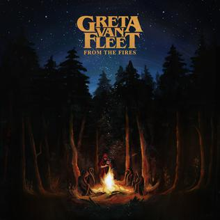
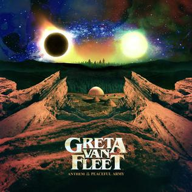
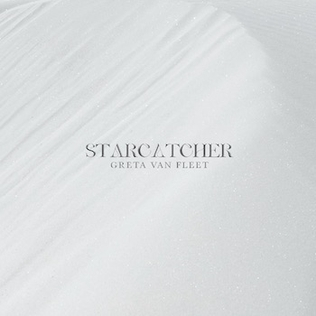
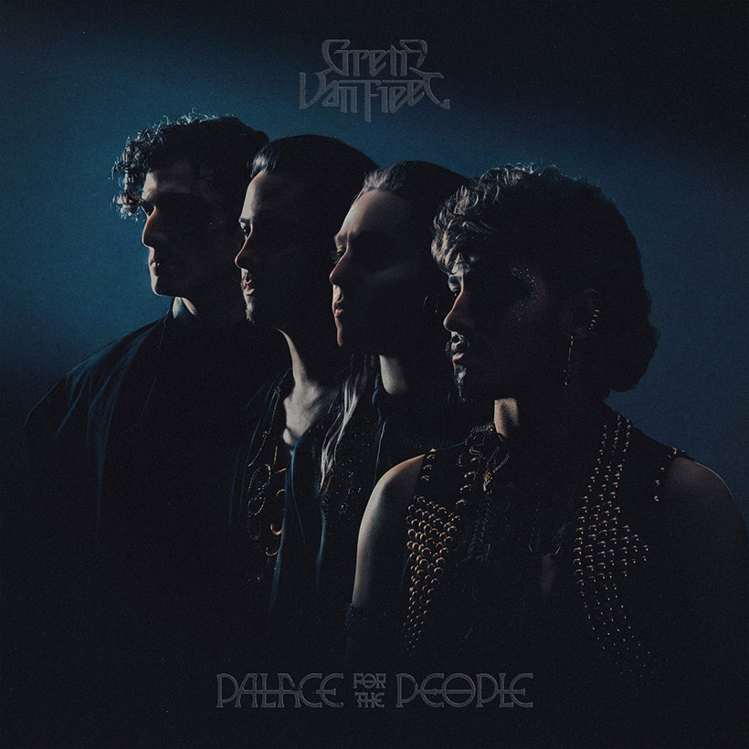

This Grammy-winning double EP served as the band's breakout introduction to the world. It features a raw, highly
energetic classic rock sound heavily inspired by 1970s blues-rock. The short tracklist contains their massive
early hits "Highway Tune" and "Safari Song."

This project marks the group's official debut full-length studio album. The songwriting focuses on folklore,
nature, and themes of peace. Musically, it balances heavy guitar riffs with soft acoustic moments on tracks like
"When the Curtain Falls."

Their sophomore album introduces a much more cinematic and complex progressive sound. The lyrics shift toward
mature topics like war, religion, and human resilience. It expands their style by using grand orchestration and
organ melodies on epic tracks like "Heat Above". As well as showcasing the raw power of Josh Kiszka's vocals
on "Light My Love".

This record strips away the polished production to capture a gritty, live-in-the-studio energy. The overall vibe
shifts into a heavier, psychedelic, and mythological space. Songs like "Meeting the Master" show off a raw and
aggressive approach to their hard rock style.

This album marks the band's creative return after a three-year hiatus. Written in a remote cabin, the concept
focuses entirely on human connection and community shelter. It introduces brand new elements like strings, brass,
and world rhythms into their usual rock sound.